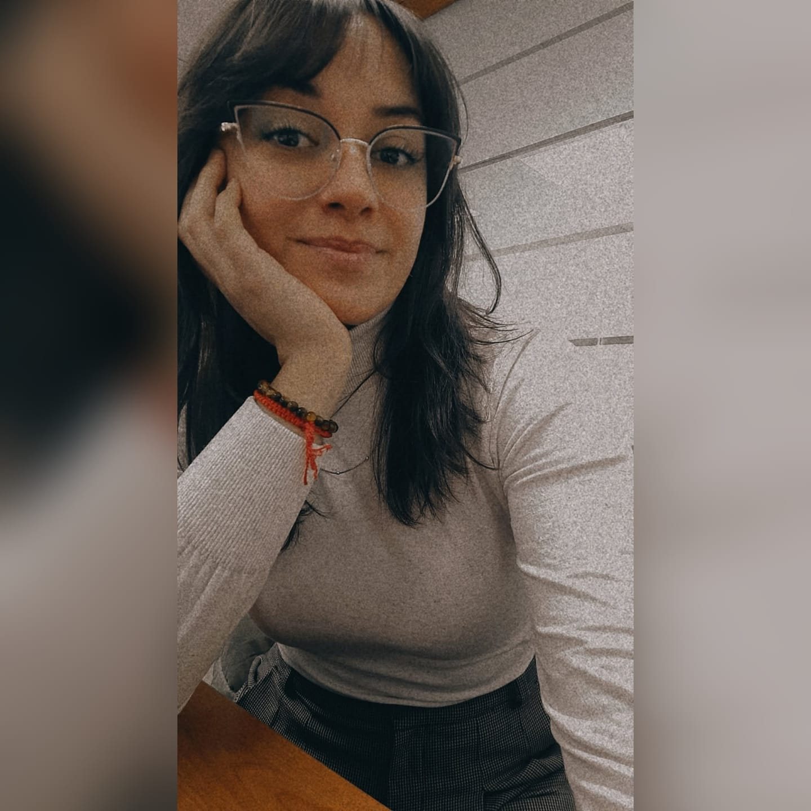
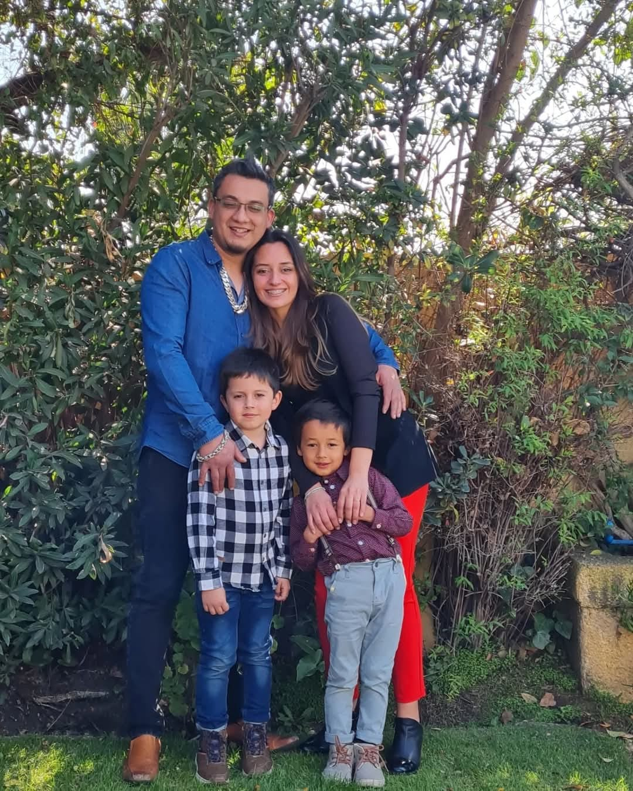
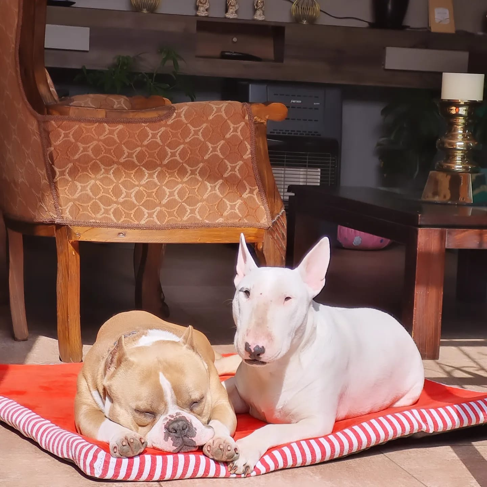

Analista Programador, mamá y amante de la vida.
Estoy estudiando la carrera de Analista Programador. Aparte de estudiar, también trabajo y soy mamá de dos maravillosos hijos: Maxi y Renato.
En mi hogar también viven mis dos perros, Arya y Zeus, que son parte de mi familia y mis compañeros fieles. Cada día es un desafío, pero también una oportunidad para crecer.
Hoy me siento feliz de estar en esta etapa de mi vida. Por momentos no imaginé llegar tan lejos, pero aquí estoy, orgullosa de lo que he logrado y con muchas ganas de seguir aprendiendo y mejorando. Quiero convertirme en una gran profesional y construir un futuro lleno de propósito y bienestar para mí y mi familia.
Somos una familia de cuatro personas que, como muchas, hemos recorrido juntos caminos llenos de aprendizajes, amor y desafíos. En el centro de todo estamos nosotros: Michael, Maxi, Renato y yo, Valentina.
Michael es un compañero comprometido y presente, que ha estado conmigo en muchos momentos importantes de la vida. Juntos hemos aprendido a crecer como pareja y como padres.
Maxi, nuestro hijo mayor, es curioso, sensible y muy observador. Siempre tiene preguntas interesantes que nos hacen ver el mundo con nuevos ojos. Tiene una imaginación increíble y un gran corazón.
Renato es el pequeño de la casa, pero con una energía que llena cada rincón. Es risueño, tierno y valiente. Nos enseña a disfrutar lo simple y a reír con ganas cada día.
Yo, Valentina, soy mamá, estudiante y trabajadora. Pero, por sobre todo, soy una mujer que ama profundamente a su familia y que da lo mejor de sí para vernos crecer con amor, respeto y unión.
Juntos formamos un hogar imperfecto pero lleno de vida, donde cada día buscamos aprender, apoyarnos y soñar en grande.
En nuestro hogar también viven Arya y Zeus, nuestros queridos perros que llenan nuestras vidas de alegría, amor y compañía incondicional.
Arya es dulce, cariñosa y siempre está lista para jugar o acurrucarse. Zeus, con su energía y nobleza, es nuestro guardián y amigo fiel. Son una parte esencial de nuestra familia y nos regalan momentos inolvidables cada día.
Quiero convertirme en una gran profesional y construir un futuro lleno de propósito y bienestar para mí y mi familia.